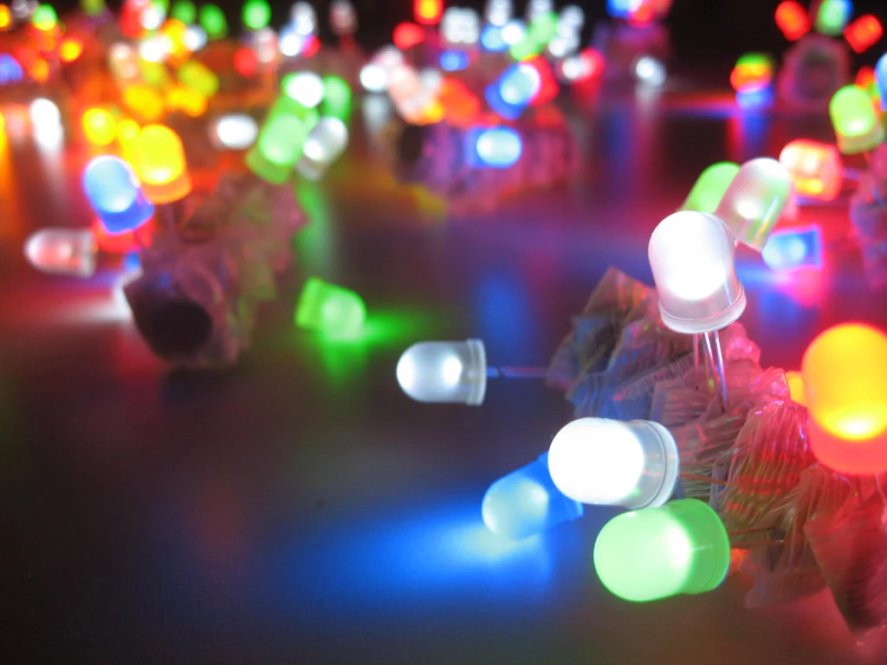
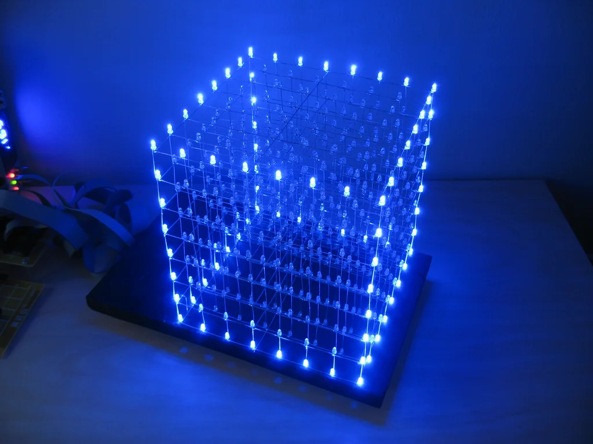
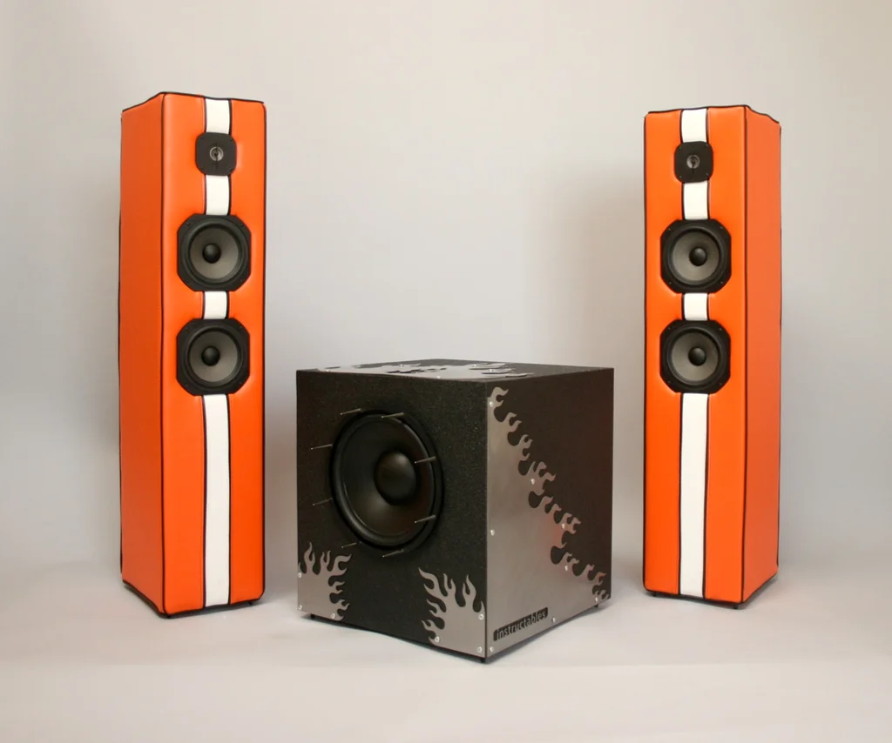

Origami and Projection Mapping

All you need to make the sculpture is paper, tape, and a bit of time. :)
Moving Bird Sculpture

This project not only pushes the limits of your artistic skills but also allows you to blend art with engineering.
Rainbow Butterfly Wings

Here we have beautiful rainbow-colored butterfly wings with which our children can enjoy imaginary play, go out on a sunny day and let the sun do its magic, and our children will be amazed by the bright colors and how they match their silhouette.
Custom Made Spider

Foam based spider which is very easy to make!
LED Flashing Circuit
Learn how to make an LED blink using a simple circuit with a resistor and a 555 timer.
LED Cube
Build a 8x8 matrix LED Cube
Homemade Speaker
Create this DIY custom speaker that requires very few materials!
Infrared Remote Control

Control devices using an infrared remote and receiver.
fake tatoo, arm arts. ONE PIECE, Monkey.D.Luffy gum fist

Make this unique one piece art!
Trans-Medium UFO Art

Illuminated Flying Saucer Rides Gravity Wave Into Landscape Painting
Laser Engraved Painting With the Fordite Method

The goal of this project is to replicate the classic design as closely as possible
Flower Study: Surrealist Acrylic and Impasto Painting

Using a combination of acrylic paint and a texturized, impasto medium on a 24" x 36" canvas board, this painting deconstructs our perception of the human form, both fusing it with and constructing it out of flora.